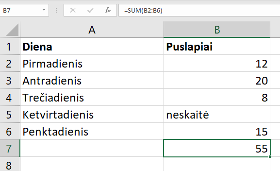
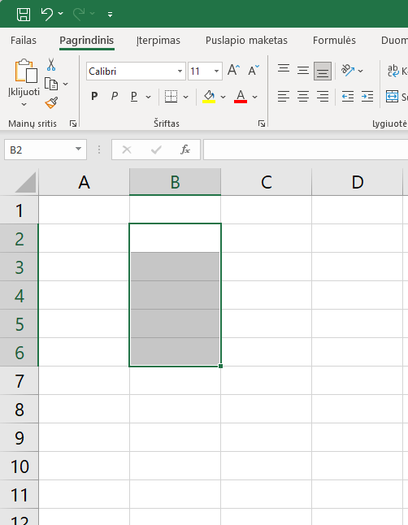
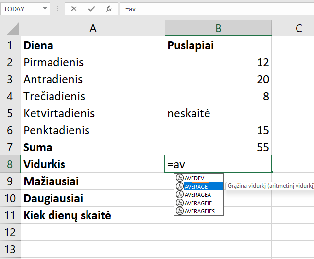
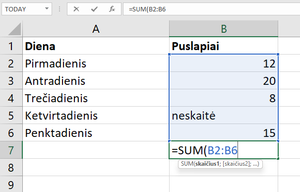
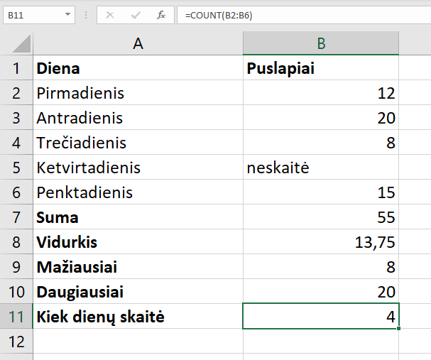
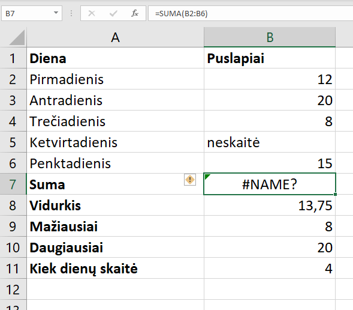
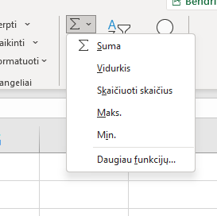

Ką mokėsi po šios pamokos
- Paaiškinsi, kas yra funkcija ir iš kokių dalių ji sudaryta.
- Užrašysi langelių bloką, pavyzdžiui,
B2:B6. - Apskaičiuosi sumą, vidurkį, mažiausią ir didžiausią reikšmę, suskaičiuosi, kiek langelių turi skaičius.
- Atpažinsi dažniausias klaidas ir mokėsi jas ištaisyti.
Kas yra funkcija?
Sudėti penkis skaičius galima ir taip: =B2+B3+B4+B5+B6. O jeigu skaičių būtų 300? Funkcija – tai paruoštas veiksmas, turintis vardą. Parašai vardą, nurodai langelius, ir Excel viską apskaičiuoja pats.

Langelių blokas – tai keli greta esantys langeliai. Jis užrašomas per dvitaškį: B2:B6 reiškia „visi langeliai nuo B2 iki B6“. Dvitaškį skaityk kaip žodį iki.
Bloką gali pažymėti ir pele: nuspausk kairįjį klavišą langelyje B2 ir tempk žemyn iki B6.

B2:B6=SUM(B2;B4;B6). Jei tavo kompiuteryje Excel nustatytas angliškai, vietoj kabliataškio rašomas kablelis.Penkios funkcijos
Lentelėje surašyta, kiek puslapių Tomas perskaitė per darbo savaitę. Ketvirtadienį jis neskaitė, todėl ten įrašytas žodis, o ne skaičius.
| A | B | |
|---|---|---|
| 1 | Diena | Puslapiai |
| 2 | Pirmadienis | 12 |
| 3 | Antradienis | 20 |
| 4 | Trečiadienis | 8 |
| 5 | Ketvirtadienis | neskaitė |
| 6 | Penktadienis | 15 |
Sudeda visus bloko skaičius.
Sudeda skaičius ir padalija iš to, kiek jų yra: 55 : 4.
Suranda mažiausią skaičių.
Suranda didžiausią skaičių.
Suskaičiuoja, keliuose langeliuose įrašyti skaičiai. Žodžių neskaičiuoja.
Kaip įvesti funkciją
-
Spustelėk langelį, kuriame nori matyti rezultatą, ir pradėk rašyti. Įvedus
=av, Excel pats pasiūlo funkcijas, kurių vardas taip prasideda. Reikiamą pasirink rodyklėmis ir spausk Tab arba spustelėk ją du kartus. Vardą gali rašyti ir mažosiomis raidėmis – Excel jas pavers didžiosiomis.
Funkcijų sąrašas su užuomina, ką pasirinkta funkcija daro. -
Nurodyk bloką. Po atidarančio skliausto pažymėk langelius pele arba įrašyk bloką klaviatūra. Excel apveda bloką spalvotu rėmeliu, o po langeliu parodo, kokių argumentų funkcija laukia.

Rašoma formulė: mėlynas rėmelis rodo, kuriuos langelius funkcija sudės. -
Uždaryk skliaustą ir spausk Enter. Taip pat įvesk ir kitas funkcijas. Štai užbaigta lentelė: langelyje B7 – suma, B8 – vidurkis, B9 – mažiausia, B10 – didžiausia reikšmė, B11 – dienų, kai Tomas skaitė, skaičius.

Pažymėtas langelis B11: formulės juostoje matyti =COUNT(B2:B6).
Išbandyk pats
Čia – 7a klasės matematikos kontrolinio taškai. Spustelėk žalsvą langelį, įrašyk formulę ir spausk Enter, kaip tikrame Excel. Rašant mėlynai pažymimi langeliai, kuriuos formulė naudoja.
Dažniausios klaidos
SUM(B2:B8)Excel langelyje parodys tiesiog šį tekstą.=SUM(B2:B8)Formulė visada prasideda lygybės ženklu.=SUMA(B2:B8)Excel rodo #NAME? – tokio vardo jis nežino.=SUM(B2:B8)Funkcijų vardai rašomi angliškai, raidė į raidę.=SUM(B2;B8)Sudės tik du langelius: B2 ir B8.=SUM(B2:B8)Dvitaškis reiškia „nuo–iki“, kabliataškis – „ir“.=SUM(B2:B10) įrašyta į langelį B10. Formulė naudoja pati save, ir Excel įspėja apie ciklinę nuorodą.=SUM(B2:B8)Į bloką neįtrauk langelio, kuriame rašai formulę.
SUMA. Spustelėjęs geltoną ženkliuką pamatysi paaiškinimą.Greitesnis kelias: mygtukas Σ
Visas penkias funkcijas galima įterpti ir neįrašant jų vardo. Skirtuko Pagrindinis dešinėje yra mygtukas Σ. Spustelėjęs šalia jo esančią rodyklę, pamatysi sąrašą:
Suma → SUM
Vidurkis → AVERAGE
Skaičiuoti skaičius → COUNT
Maks. → MAX
Min. → MIN
Pažymėk langelį po skaičių stulpeliu, pasirink veiksmą, ir Excel pats įrašys formulę bei pasiūlys bloką. Prieš spausdamas Enter visada patikrink bloką – Excel gali parinkti ne visus langelius, pavyzdžiui, sustoti ties langeliu su žodžiu.

Pasitikrink
Užduotys tikrame Excel
1 užduotis. Savaitės orai
- Atsidaryk Excel ir langelyje A1 parašyk „Diena“, o B1 – „Temperatūra“.
- Langeliuose A2:A8 surašyk savaitės dienas, o B2:B8 – kiekvienos dienos oro temperatūrą (sugalvok arba pasižiūrėk orų prognozę).
- Langeliuose A10:A13 parašyk: „Vidurkis“, „Šalčiausia“, „Šilčiausia“, „Dienų skaičius“.
- Šalia, langeliuose B10:B13, įrašyk tinkamas funkcijas:
AVERAGE,MIN,MAX,COUNT. - Pakeisk vienos dienos temperatūrą ir stebėk, kaip rezultatai persiskaičiuoja patys.
2 užduotis. Kišenpinigių išlaidos
- Naujame lape langelyje A1 parašyk „Pirkinys“, o B1 – „Kaina (€)“.
- Langeliuose A2:A7 surašyk šešis daiktus, kuriuos per mėnesį nusipirkai ar norėtum nusipirkti, o B2:B7 – jų kainas eurais. Vieną daiktą gavai dovanų: vietoj jo kainos parašyk žodį „dovana“.
- Langeliuose A9:A12 parašyk: „Iš viso išleista“, „Vidutinė kaina“, „Brangiausias pirkinys“, „Kiek pirkinių pirkta“.
- Šalia, langeliuose B9:B12, įrašyk tinkamas funkcijas:
SUM,AVERAGE,MAX,COUNT. - Pažiūrėk, ką rodo langelis B12. Kodėl pirkinių suskaičiuota 5, o ne 6?
3 užduotis. Šuolis į tolį
- Naujame lape langelyje A1 parašyk „Mokinys“, o B1 – „Rezultatas (m)“.
- Langeliuose A2:A9 surašyk aštuonis vardus, o B2:B9 – jų šuolio į tolį rezultatus metrais, pavyzdžiui, 3,45. Vienas mokinys nedalyvavo: jo langelyje parašyk „nedalyvavo“.
- Langeliuose A11:A15 parašyk: „Geriausias rezultatas“, „Silpniausias rezultatas“, „Vidutinis rezultatas“, „Kiek mokinių šoko“, „Visų šuolių suma“.
- Šalia, langeliuose B11:B15, įrašyk tinkamas funkcijas:
MAX,MIN,AVERAGE,COUNT,SUM. - Mokinys, kuris nedalyvavo, šuolį atliko vėliau. Vietoj žodžio įrašyk jo rezultatą ir stebėk, kurie skaičiai pasikeitė.
Excel pradžiamokslis · 1 pamoka